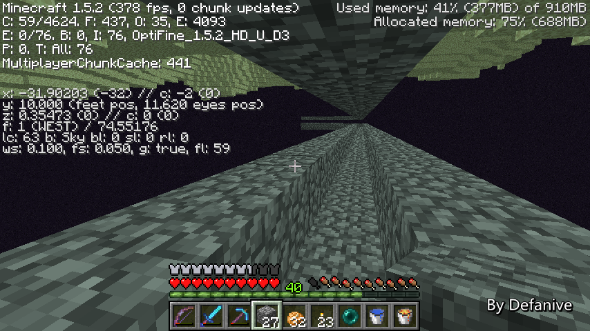

首页
上一页
241
242
243
244
245
246
246
247
248
249
250
251
下一页
末页
defanive2
无尽黑夜
14
再带上9组鹅卵石
每米轨道要4个鹅卵石
这么多鹅卵石可以铺上9x64/4=144m
应该够用了
——来自 MCLive
17758楼
2013-06-19 22:13
defanive2
无尽黑夜
14
一来到END水流被刷掉
但是又马上更新了水源被重新冲出
效果非常不过
PS 先休息几分钟，喝口水
——来自 MCLive
17759楼
2013-06-19 22:16
defanive2
无尽黑夜
14
本来想继续播的，但是发现已经有180个回复了
百度的个人中心里面只能显示200个回复
如果回复再多的话靠后的回复就看不到了
我先回复一下大家，回复完了一会继续播
——来自 MCLive
17762楼
2013-06-19 22:27
defanive2
无尽黑夜
14
回复了一些，继续来到这里造水路
从上面下来的时候下面已经开始刷小黑了
不过由于水路只有2格高所以在里面是没有危险的
——来自 MCLive
17779楼
2013-06-19 23:08
defanive2
无尽黑夜
14
把几只小黑打下去玩玩
——来自 MCLive
17780楼
2013-06-19 23:09
defanive2
无尽黑夜
14
已经快到岛的另外一边了
现在是x=-67
——来自 MCLive
17781楼
2013-06-19 23:14
defanive2
无尽黑夜
14
终于到x=103了
接下来就要铺到z=24
——来自 MCLive
17783楼
2013-06-19 23:18
defanive2
无尽黑夜
14
还有3组鹅卵石，应该够用了
——来自 MCLive
17784楼
2013-06-19 23:19
defanive2
无尽黑夜
14
铺得差不多了，现在往回跑
需要对水流的设置做一些简单的计算
——来自 MCLive

17785楼
2013-06-19 23:20
defanive2
无尽黑夜
14
起点是x=97，终点是x=-103
距离就是201格
而水流铺设是8格水+1格踏板
也就是9格一个单位
那么201/9=22余3
也就是说到x=-100时是一个踏板
那么x=-101时就是水源了
——来自 MCLive
17787楼
2013-06-19 23:24
defanive2
无尽黑夜
14
也就是说现在站的这里是踏板
鼠标所指的就是水源
——来自 MCLive
17788楼
2013-06-19 23:25
defanive2
无尽黑夜
14
最后一个水的结尾就停到了z=14这里
距离z=24已经很近了
于是先在这里作为怪物的一个简单出口吧
怪物全部聚集到这里之后
经过处理后再进入怪物站
——来自 MCLive
17790楼
2013-06-19 23:28
defanive2
无尽黑夜
14
于是在这里又用同样的方法往下建
——来自 MCLive
17791楼
2013-06-19 23:29
defanive2
无尽黑夜
14
然后在尾端做好一个3格深的坑
僵尸就会全部都挤到里面去了
这里就是进入怪物站之前的准备室
——来自 MCLive
17792楼
2013-06-19 23:32
defanive2
无尽黑夜
14
接下来就可以沿途返程造水路了
造水路的话冰是一个好帮手
之前算好水路就可以返程往回建
往回建水路就不需要逆着水流走了
——来自 MCLive
17794楼
2013-06-19 23:33
defanive2
无尽黑夜
14
最后就成功的造好了水路
——来自 MCLive
17795楼
2013-06-19 23:39
defanive2
无尽黑夜
14
最后就一直跳着往上建就可以了
水路和中转站终于都完成了
接下来只需要收集80个怪物就可以了
——来自 MCLive
17796楼
2013-06-19 23:41
defanive2
无尽黑夜
14
今天也算是一大步骤完成了
当然END改造这个大工程还是距离完成很远的
不过一步一步的接近，很快就能完成了
南瓜收集了近2组了，下一次就可以开工收集怪物了
今天的找茬也在这张图里哦
不过这次的比较简单
总之就是这样，如果是在学校用手机看直播的话就快睡了吧
我回复一下大家就去睡了
——来自 MCLive
17799楼
2013-06-19 23:47
defanive2
无尽黑夜
14
@ztc囧儿
最近在做喵里奥的吐槽视频
正好我好久没玩这个游戏了，来怀旧一下
顺便试了一下自己每关最快可以多久完成
视频来自：
优酷
感觉自己玩得还是可以的，欢迎围观！
17809楼
2013-06-20 20:33
defanive2
无尽黑夜
14
今天来继续直播一会吧
不要问我为什么直播都这么晚
我生物钟坏掉已经不是一天两天的事情了
不过都放假了，没什么关系
倒是看直播的同学如果第二天有课什么的话还是早点睡吧
熬夜是不好的
——来自 MCLive
17815楼
2013-06-20 22:48
defanive2
无尽黑夜
14
上次猜谜的答案是3种木板排成了233
可以注意到普通木板分成了2格来摆放
这是比较反常的，进而就可以发现数字的排列了
如果没看错的话，
@zhaooqian
是第一个发现的
仍然是猜对没奖政策 = =
——来自 MCLive
17816楼
2013-06-20 22:51
defanive2
无尽黑夜
14
今天仍然是继续我们的END工程
昨天工程进行到了建造好怪物站的水路了
但是最关键的怪物们还不在
因此我们今天的任务就是开始收集怪物
——来自 MCLive
17817楼
2013-06-20 22:56
defanive2
无尽黑夜
14
来到遗迹，先睡一觉
重设出生点，方便工程
——来自 MCLive
17818楼
2013-06-20 23:00
defanive2
无尽黑夜
14
地狱下面就是我们的僵尸刷怪笼了
接下来任务就是用刷怪笼收集80个僵尸
而且是可以拾取物品的僵尸
——来自 MCLive
17819楼
2013-06-20 23:01
defanive2
无尽黑夜
14
不过我们南瓜只有2组，只够做1个怪物站
我们先建一个简易的南瓜场吧
忘记带泥土了，先到周围挖点泥土用
——来自 MCLive
17822楼
2013-06-20 23:04
defanive2
无尽黑夜
14
沙砾
话说沙砾在UHC里面杀了大家不少血
沙砾的窒息伤害是不会被防具减少的
而且一不小心就可能中一枪
UHC里面各种伤血排行里沙砾也可以占个位置了吧
PS 不如来把一季UHC里面的各种伤血方式都整理一下吧
感觉会是挺有趣的结果
——来自 MCLive
17823楼
2013-06-20 23:07
defanive2
无尽黑夜
14
在这里放上水源
——来自 MCLive
17824楼
2013-06-20 23:09
defanive2
无尽黑夜
14
简单设置好了一片农地
16个苗位，应该够用了
——来自 MCLive
17825楼
2013-06-20 23:10
defanive2
无尽黑夜
14
貌似是12个苗位而已。。数错了
接下来金克拉
——来自 MCLive
17826楼
2013-06-20 23:11
defanive2
无尽黑夜
14
金克拉之后大部分都长成了
现在金克拉被减弱之后每次使用都要吐槽一下
虽然说这个削弱是非常平衡游戏的 = =
——来自 MCLive
17828楼
2013-06-20 23:13
首页
上一页
241
242
243
244
245
246
246
247
248
249
250
251
下一页
末页